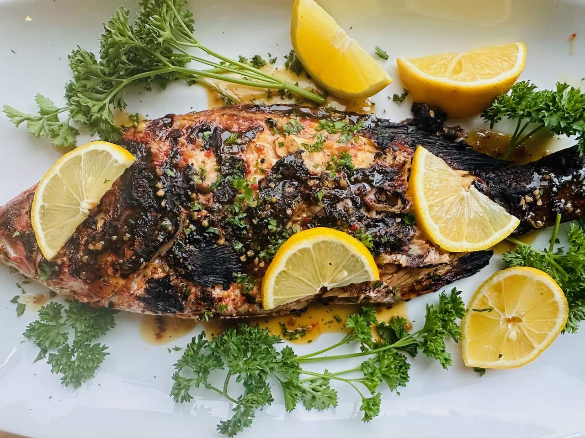

Pargo Rojo Grillado
Whole grilled red snapper with Caribbean spices

The Pride of Caribbean Waters
Our Pargo Rojo Grillado celebrates the finest red snapper from local Caribbean fishermen. Each whole fish is carefully selected for quality, marinated with our signature blend of coastal spices, and grilled to perfection over open flame. The result is tender, flaky meat with a beautifully crispy skin, served with coconut rice and fried plantains for an authentic coastal Colombian experience.
Premium Ingredients
- Whole red snapper (600-800g)
- Coastal spice marinade blend
- Fresh lime and cilantro
- Garlic and ají peppers
- Coconut rice and patacones
Perfect Pairings
- Pinot Grigio - Light and crisp pairing
- Rosé wine - Complements grilled flavors
- Aguila beer - Colombian coastal classic
Dietary Information
Allergens: Fish
Options: Gluten-free, Dairy-free
Calories: 520 kcal
Protein: 48g
Chef's Note
"Red snapper requires respect and technique. We score the fish to ensure even cooking and marinate it for at least 2 hours. The key is high heat for crispy skin while keeping the inside moist and tender. This is coastal cooking at its finest."
Origin & Tradition
Pargo Rojo has been a staple of Caribbean Colombian cuisine for generations. Grilling whole fish is a tradition passed down through coastal families, representing abundance and celebration. Our preparation honors these ancestral techniques while ensuring sustainable fishing practices.